It is often useful to slice a portion from a property in each label along a path. The most common example is a transaction-time slice, or rollback, query that determines the other properties as of a particular transaction time. A path is sliced by slicing each property in a label on the path, and checking whether the resulting path is valid.
[
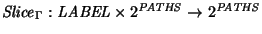
]
A descriptor,  ,
slices
the labels along each path in a set of paths, P, as follows.
,
slices
the labels along each path in a set of paths, P, as follows.
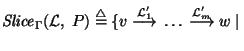
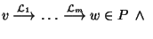
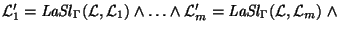
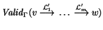
`2
A label is sliced property by property. This slicing is complicated by missing properties. Specifically, if a property is missing from the descriptor, but present in the label, it is passed unchanged into the result. A missing property in a label is also missing in the result, except if the descriptor requires the property, in which case the property from the descriptor is added to the result. Finally, if the property is both in the label and the descriptor then a property-specific constructor slices the property appropriately and adds it to the result.
[
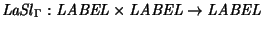
]
A label,  ,
slices a label,
,
slices a label,  ,
as follows.
,
as follows.
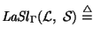
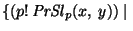
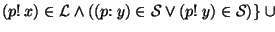
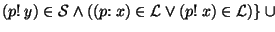
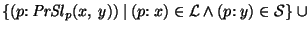
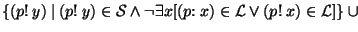
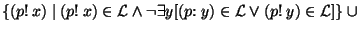
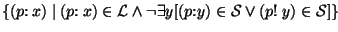
`
Recall that
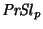
is a property-specific constructor that slices a property. Table 1 shows the slicing operators.
A user is interested in retrieving the other properties about movie stars names as of the current time. That set of paths can be obtained as follows.
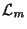
:= {(name! movie)}
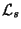
:= {(name! stars)}
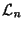
:= {(name! name)}
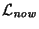
:= {(trans. time: [now - now])}
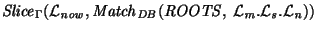
Note that a
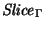
with as its first argument differs from a Match with that descriptor since the transaction time property of every label (that has a transaction time) in the sliced path is [now - now], whereas the transaction time property in the matched path would be unchanged from the underlying data.